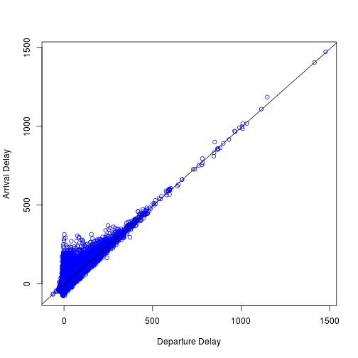

Airline on-time data are reported in 2014 to the U.S. Department of Transportation (DOT), Bureau of Transportation Statistics (BTS) by the 14 U.S. air carriers that have at least 1 percent of total domestic scheduled-service passenger revenues.
The data cover nonstop scheduled-service flights between points within the United States (including territories).
Dataset are available since January 1995 up to now and include all departure and arrival statistics (scheduled departure time, actual departure time, scheduled elapse time, departure delay, wheels-off time and taxi-out time) by airport and airline; airborne time, cancellation and diversion by airport and airline.
The airline on-time statistics data used for this assignment come originally from RITA.
Due to the better compression in comparison to the original files, we downloaded the september 2001 data from there.
Airline On-Time Statistics
Analysis of US Airline Delays in September 2001
jpielorz
Slidify Presentation for "Developing Data Products"
Scope and References
Exploratory Data Analysis
- For the Shiny application, the analysis is restricted to data from September, 2001 and considers the variables
Month,DayofMonth,DepDelayandArrDelay.
air_data <- read.csv("../data//sep2001.csv", header = TRUE)
head(air_data)
## X Month DayofMonth ArrDelay DepDelay
## 1 4186032 9 5 22 31
## 2 4186033 9 6 14 19
## 3 4186034 9 7 43 54
## 4 4186035 9 8 14 15
## 5 4186036 9 10 0 4
## 6 4186037 9 11 NA NA
Delay Frequencies September 2001
hist(air_data$DepDelay, xlab="DepDelay [minutes]", col = "lightblue", xlim=c(-100,300), breaks=100)

Results and Link to App

- Test the Shiny application at http://jpielorz.shinyapps.io/DataProduct